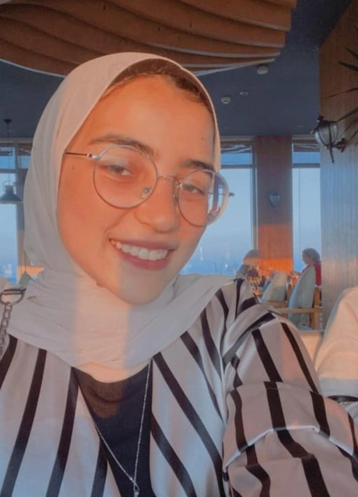
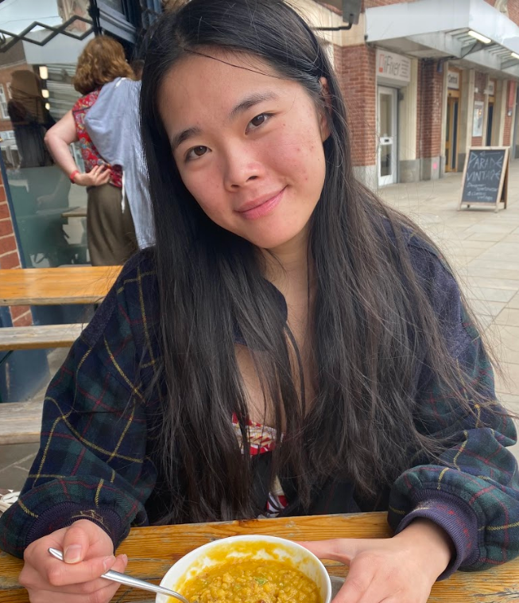
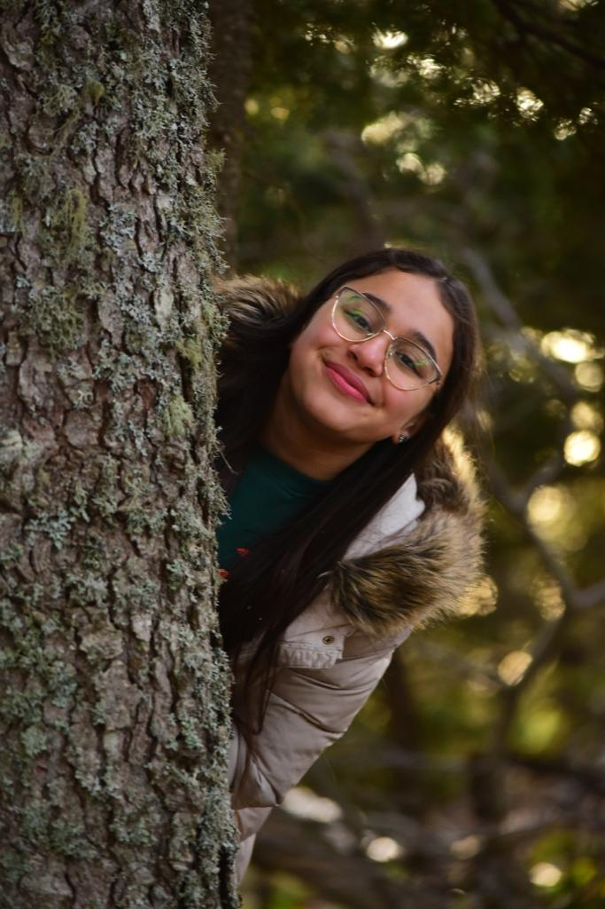

Hello everyone, I'm Nicole! I've had minimal prior coding experience before starting KWK's 2022 Web Development programme, though, it was just the basics in a few languages because I felt a bit uninspired by the way I was taught. I'm glad I stumbled across KWK on Instagram because it is so different to what I have experienced! I really hope this site has given you more information about computer science and inspires you too :)
Menna Hamed

hey folks!!I am menna hamed from Egypt.KWK was my first experince with me actually coding and learning how to code in a proper way.
Lamb Chen

hi, i'm lamb!! if results day goes well, i am hoping to go to bristol university to study computer science despite not having taken it for a level or gcse. whilst trying to build my interest, i found it difficult to locate resources since the internet has such a vast selection and they are all located in different places! hence i hope this site helps collate them in one easy to access space to save you all time!
Lily Foula

Hi Everyone! My name is Lily and KWK was my first ever coding experience. I am always open to learning new things and coding is one of them, that's why I signed up for KWK and I am thrilled to have done that. At first, I found coding difficult, but by time it got easier and easier. I am hoping to continue learning more about coding, get more into CS and maybe study it in college.